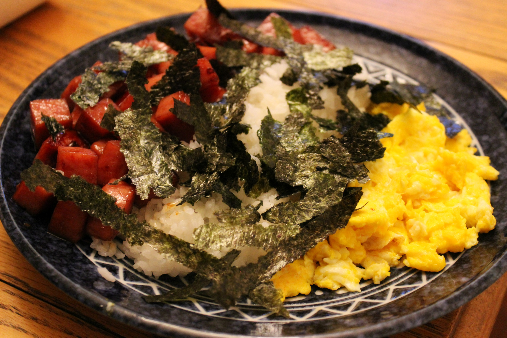

Home
Deconstructed Spam Musubi

Description:
I was craving Spam musubi. Without a musubi maker/rice press, I improvised with this deconstructed version.
Ingredients:
- ½ cup white sugar
- ¼ cup lite soy sauce
- ¼ cup oyster sauce
- 2 (12 ounce) cans low-sodium canned luncheon meat (such as SPAM®), cut into 1/2-inch cubes
- 2 ½ cups water
- 2 cups medium-grain white rice (such as Calrose)
- 6 tablespoons rice vinegar
- 1 (1.2 ounce) package roasted and seasoned seaweed, torn into 1 1/2-inch pieces
Directions:
- Mix sugar, soy sauce, and oyster sauce together in a resealable gallon-size bag. Add luncheon meat, seal bag, and turn to coat, gently squeezing to coat luncheon meat. Marinate for at least 1 hour.
- Bring water to a boil; add rice. Return water to a boil, reduce heat to low, and simmer until liquid is absorbed and rice is tender, about 15 minutes.
- Heat a skillet over medium-high heat; add luncheon meat and marinade. Cook, stirring frequently, until luncheon meat is browned and marinade is absorbed, about 5 minutes.
- Stir rice vinegar into rice until combined.
- Stir rice and seaweed together in a bowl; add luncheon meat and mix well.